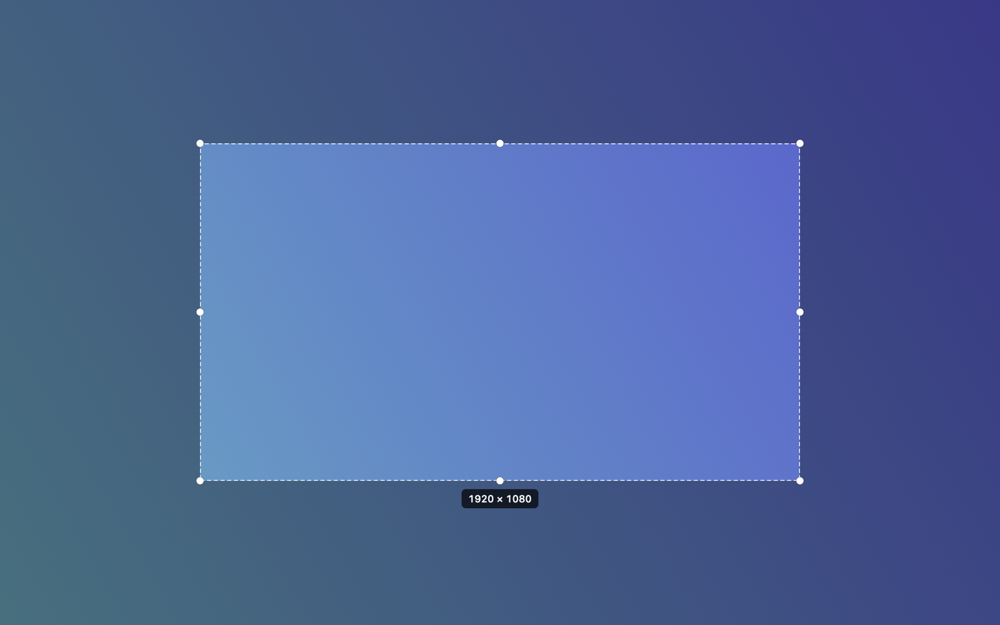

Replay your path, or pin it somewhere new
Drag the circle in the preview to move it. Resize, mirror, or hide it. Export one MP4 when it looks right.
Free beta · macOS 15 · Apple Silicon and Intel
Orbit is a Mac screen recorder with a face-cam circle you can drag anywhere, during the recording or after it. Press ⌘⇧5 like the macOS screenshot bar. Nothing is uploaded, and there is no subscription.
Open source, AGPL-3.0. The beta isn't notarized yet, so macOS asks you to approve it once. How to open it.
Most recorders burn the face circle into the video. Orbit keeps the camera separate and remembers where the circle was, so the editor can put it anywhere.
Drag the circle in the preview to move it. Resize, mirror, or hide it. Export one MP4 when it looks right.
Record the whole screen or draw a frame. The 16:9 lock snaps in exact steps, so 1080p means 1920 × 1080 at a constant 60 fps, with no black bars.

Recordings go to ~/Movies/Orbit. No account, no upload, no viewer tracking. If the screen shows client or patient data, that's the point.
The editor plays the recording back while it records your camera and mic, then overlays it. Or import a clip you already have.
Loom is good at sharing links and tracking views. Orbit is good at recording and staying out of the cloud. Pick by what you need.
| Orbit | Loom Business | |
|---|---|---|
| Price | Free beta; one-time purchase planned | $18 per user per month |
| Move the face cam after recording | Yes | No |
| Where recordings live | Your Mac | Loom's cloud |
| Share links and viewer analytics | No. Export an MP4. | Yes |
| Source code | Open, AGPL-3.0 | Closed |
| Platforms | macOS | macOS, Windows, web, mobile |
Loom pricing as listed in October 2026. Loom is a trademark of Atlassian. Orbit isn't affiliated with either.
It isn't signed with an Apple Developer ID yet, so macOS blocks it the first time. This takes a minute and happens once.
Drag Orbit to Applications and double-click it. macOS says it can't be opened.
Open System Settings → Privacy & Security, scroll to “Orbit was blocked”, and click Open Anyway.
Orbit appears in the menu bar and asks for Camera, Microphone, and Screen Recording. Everything stays on your Mac.
Say yes when it offers to take over ⌘⇧5. You can give it back from the menu.
The beta is free, and the source always will be. When Orbit leaves beta, the ready-built app will be a one-time purchase. No subscription.
Not yet. Orbit exports an MP4 you can drop into Slack, email, or a shared drive. Hosted links may come later as an optional extra.
Apple Silicon and Intel, on macOS 15 Sequoia or later.
Open an issue. Early feedback decides what gets built next.